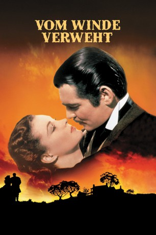
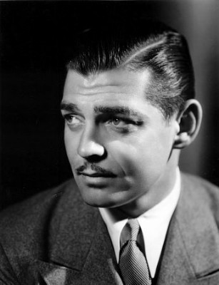
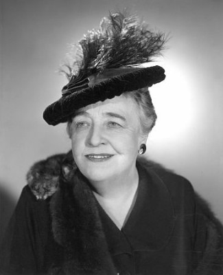
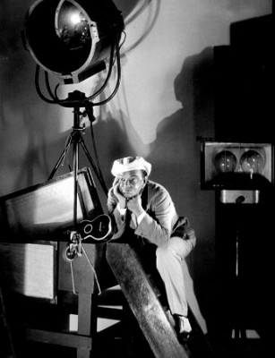
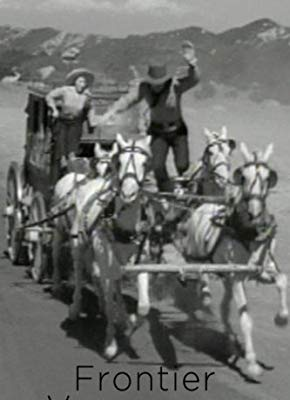
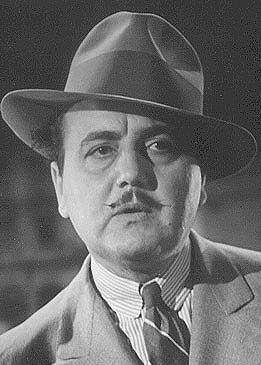
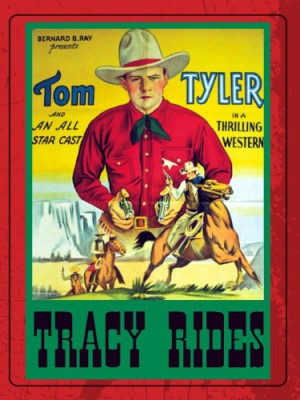
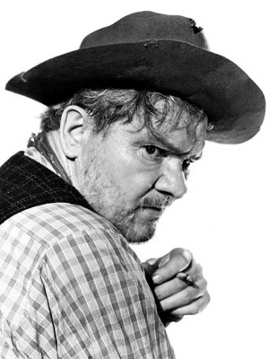

#1509 Vom Winde verweht
Alternativ: Gone with the Wind
Auszeichnungen: 1 Oscars gewonnen für 5 Oscars nominiert
 
 IMDB-Wertung: 8.2 / 10
IMDB-Wertung: 8.2 / 10  IMDB-TOP-Platzierung: 163
IMDB-TOP-Platzierung: 163  Metascore: 97
Metascore: 97 
Vom Winde Verweht ist der (inflationsbereinigt) erfolgreichste Film aller Zeiten und gilt als Höhepunkt des Hollywood-Studiosystems. David O. Selznicks (Produzent) und Victor Flemings (Regisseur) Verfilmung des Romans erhielt 10 Oscars. Clark Gable und Vivien Leigh spielen eines der unromantischsten Liebespaare der Filmgeschichte, die sich im Atlanta der Südstaatenkriege kennenlernt.
Jahr: 1939
Dauer: 238 Minuten
FSK: 12
Land: USA Studio: MGMTonspuren:
Untertitel:
Auflösung: 1080p (1488x1080) Größe: 10752 MB
Genre: Drama, Liebe, Krieg
Regisseur: Victor Fleming,  George Cukor, Sam Wood
George Cukor, Sam Wood
Drehbuch: Margaret Mitchell, Sidney Howard, Oliver H.P. Garrett, Ben Hecht, Jo Swerling
Soundtrack: Max Steiner
Darsteller:
- Thomas Mitchell als Gerald O'Hara
- Barbara O'Neil als Ellen - His Wife
- Vivien Leigh als Scarlett - Their Daughter
- Evelyn Keyes als Suellen - Their Daughter
- Ann Rutherford als Carreen - Their Daughter
- George Reeves als Brent Tarleton - Scarlett's Beau
- Hattie McDaniel als Mammy - House Servant
- Butterfly McQueen als Prissy - House Servant
 Victor Jory als Jonas Wilkerson - Field Overseer
Victor Jory als Jonas Wilkerson - Field Overseer- Leslie Howard als Ashley - His Son
 Olivia de Havilland als Melanie Hamilton - Their Cousin
Olivia de Havilland als Melanie Hamilton - Their Cousin- Rand Brooks als Charles Hamilton - Her Brother
-  Clark Gable als Rhett Butler - Visitor from Charleston
- Eddie 'Rochester' Anderson als Uncle Peter - Her Coachman
- Harry Davenport als Dr. Meade
-  Jane Darwell als Mrs. Merriwether
- Ona Munson als Belle Watling
- Isabel Jewell als Emmy Slattery
- Eric Linden als Amputation Case
 Ward Bond als Tom - Yankee Captain
Ward Bond als Tom - Yankee Captain- Jackie Moran als Phil Meade
-  Cliff Edwards als Reminiscent Soldier
-  Yakima Canutt als Renegade
- William Bakewell als Mounted Officer
- Mary Anderson als Maybelle Merriwether
- John Arledge als Dying Soldier , uncredited
 Trevor Bardette als Minor Role , uncredited
Trevor Bardette als Minor Role , uncredited-  Gino Corrado als Minor Role , uncredited
- Yola d'Avril als Belle's Girl , uncredited
 Richard Farnsworth als Soldier , uncredited
Richard Farnsworth als Soldier , uncredited Frank Faylen als Soldier Aiding Dr. Meade , uncredited
Frank Faylen als Soldier Aiding Dr. Meade , uncredited- William Hoehne Jr. als Boy covered in Ashes in Atlanta , uncredited
- Tommy Kelly als Boy in Band , uncredited
 Charles Middleton als Man with Stove Pipe Hat in Charge of Convict Workers , uncredited
Charles Middleton als Man with Stove Pipe Hat in Charge of Convict Workers , uncredited-  Tom Tyler als Commanding Officer During Evacuation , uncredited
 Dan White als Undetermined Minor Role , uncredited
Dan White als Undetermined Minor Role , uncredited- John Wray als Prison Gang Overseer , uncredited
- Fred Crane als Stuart Tarleton - Scarlett's Beau
- Oscar Polk als Pork - House Servant
- Everett Brown als Big Sam - Field Foreman
- Howard C. Hickman als John Wilkes
- Alicia Rhett als India - His Daughter
- Carroll Nye als Frank Kennedy - A Guest
- Laura Hope Crews als Aunt 'Pittypat' Hamilton
- Leona Roberts als Mrs. Meade
-  Paul Hurst als Yankee Deserter
- Cammie King Conlon als Bonnie Blue Butler
- J.M. Kerrigan als Johnny Gallagher
- Lillian Kemble-Cooper als Bonnie's Nurse in London
- Marcella Martin als Cathleen Calvert
Datei: X:\1900-1949\Vom Winde verweht (1939, FSK12, 1488x1080).mkv seit 13.07.2015
Festplatte: HD 1900-1970
 Es gibt insgesamt 80 Filme in der Gruppe '1900-1949'
Es gibt insgesamt 80 Filme in der Gruppe '1900-1949'